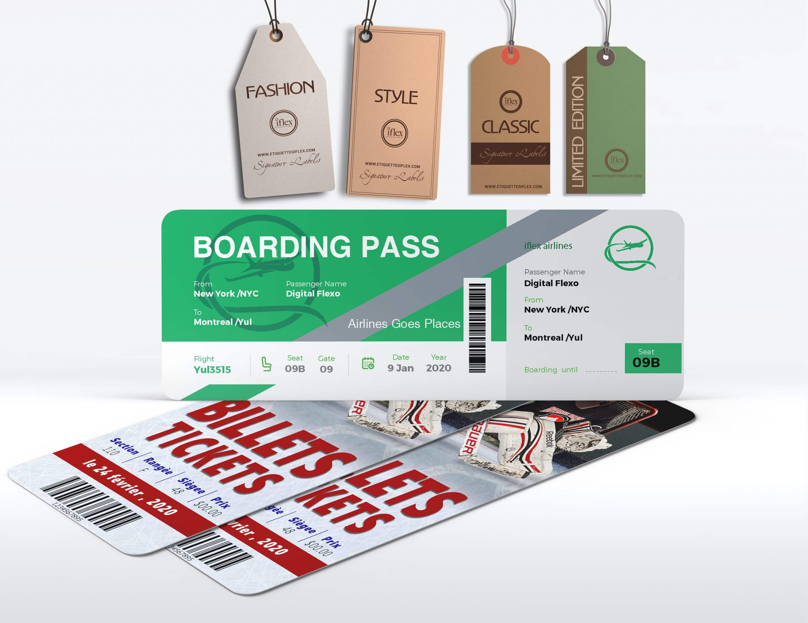
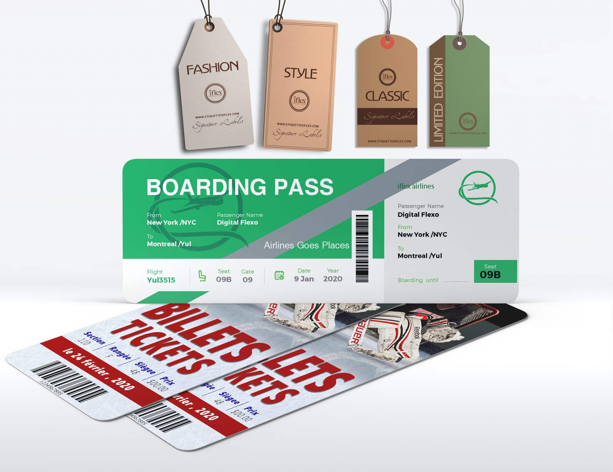

Infographiste
Mes expériences en entreprises
En tant qu'infographiste en pré-impression, j'ai travaillé principalement avec la suite Adobe. Mes compétences se concentrent sur l'utilisation des logiciels tels que Photoshop, Illustrator, InDesign et Acrobat. J'ai acquis de l'expérience dans plusieurs entreprises, notamment :
SupremeX Inc. Lasalle
SupremeX est une entreprise spécialisée dans la fabrication d'enveloppes, d'étiquettes, ainsi que d'emballages. En tant qu'infographe, j'avais la responsabilité de créer des épreuves PDF, de calibrer les couleurs, de retoucher les images et les documents, au besoin, afin de garantir une qualité optimale de l'impression. J'ai également été chargé de la fabrication de plaques flexographiques et offset, de manière rapide et efficace. Mon rôle consistait ainsi à maintenir les normes de qualité et de précision de l'entreprise, tout en utilisant des techniques efficaces pour des résultats optimaux.

Imprimerie IFLEX (Fantasia) Saint-Laurent
Iflex (Fantasia) est une entreprise spécialisée dans la fabrication d'étiquettes autocollantes, numériques, à code-barres, et d'emballages flexibles. En tant que coordinatrice, j'ai assumé la responsabilité de planifier, coordonner et superviser les projets d'impression, tout en assurant la qualité de l'impression et la gestion des relations avec les fournisseurs externes. J'ai également suivi de près les progrès des projets d'impression et j'ai géré les dossiers de projet, assurant ainsi la mise à jour constante des informations.
 

Imprimerie CDN Montréal
CDN est une entreprise spécialisée dans la fabrication de cartes d'affaires, de dépliants et d'impressions grand format, telles que des bannières, des affiches, et autres supports visuels. En tant qu'infographe, ma mission consistait à concevoir et à développer des designs graphiques pour une variété de projets imprimés et numériques. J'étais également responsable de la production de projets d'impression, incluant la découpe, la lamination, la reliure, l'impression, et autres procédés connexes.


Imprimerie Accent Impression Saint-Laurent
Accent Impression est une entreprise spécialisé dans l'impression commerciale, notamment les cartes d'affaires, les brochures, les dépliants, les catalogues, les affiches, les enseignes et les matériaux promotionnels. Mon poste consistait à concevoir des designs graphiques pour les produits imprimés, préparer les fichiers pour l'impression, y compris la vérification de la qualité des images, la résolution et la conformité aux normes de l'industrie.